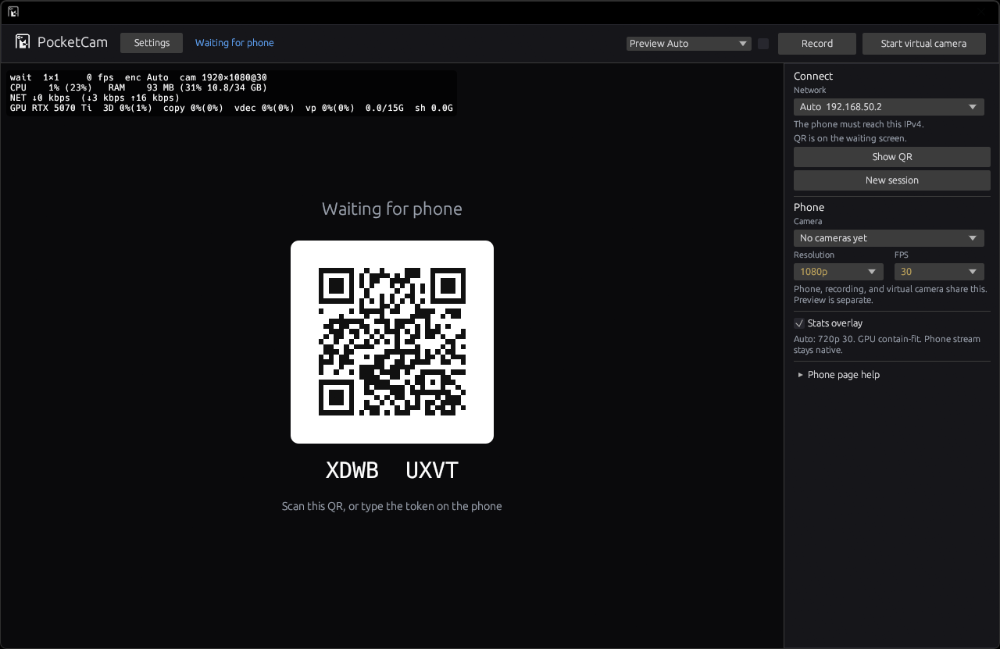
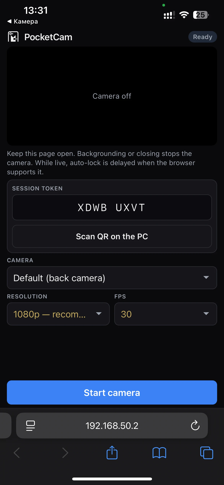
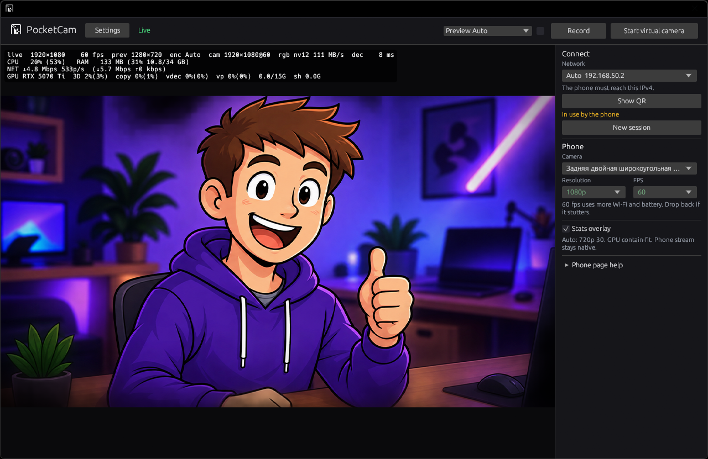
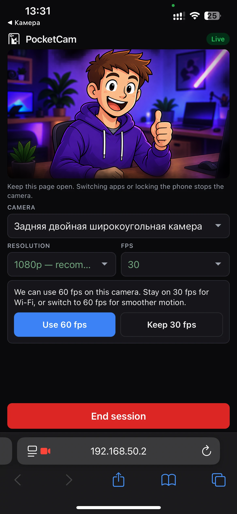

Your phone is a Windows webcam.
Nothing to install on the phone. Open PocketCam, scan the QR with Safari or Chrome, allow the camera, keep the page open. Same Wi-Fi. No accounts, no cloud, no cable.
Download for Windows 11
Latest GitHub Release
Phone browser → your PC → any app that can pick a webcam




How
- Install PocketCamSetup.exe. One UAC prompt registers the camera and a private-network firewall rule.
- Open PocketCam from the Start menu.
- On your phone, scan the QR (Safari or Chrome).
- Continue past the certificate warning — it is for this PC, not a public website.
- Tap Start camera. Keep that page in the foreground.
- In OBS, Discord, Zoom, Teams, or Windows Camera, choose PocketCam.
Certificate
Continue past the warning. PocketCam uses a certificate for this PC, not a public site.
Your LAN only
Same Wi-Fi or the phone’s hotspot. Google STUN is off. The stream does not leave the LAN.
SmartScreen
Unsigned builds warn. More info → Run anyway. Expected until the installer is code-signed.
Source
Official GitHub build only — not MIT. jsQR and the Windows Virtual Camera sample have their own licenses.